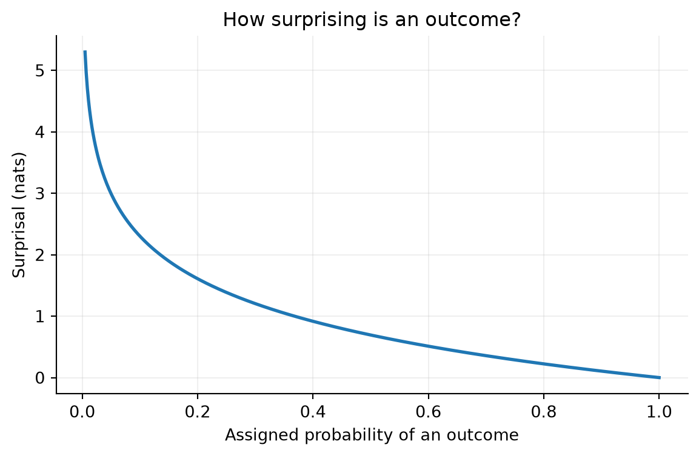
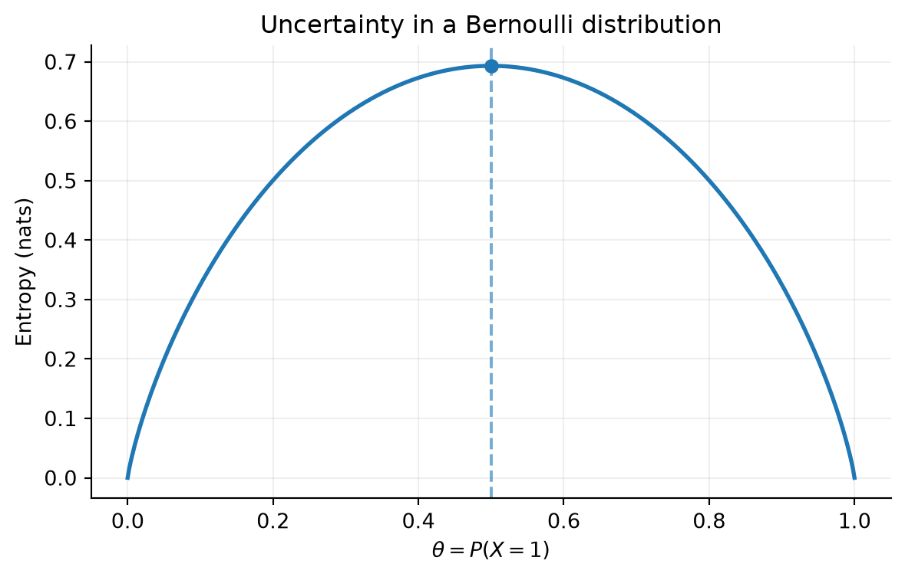
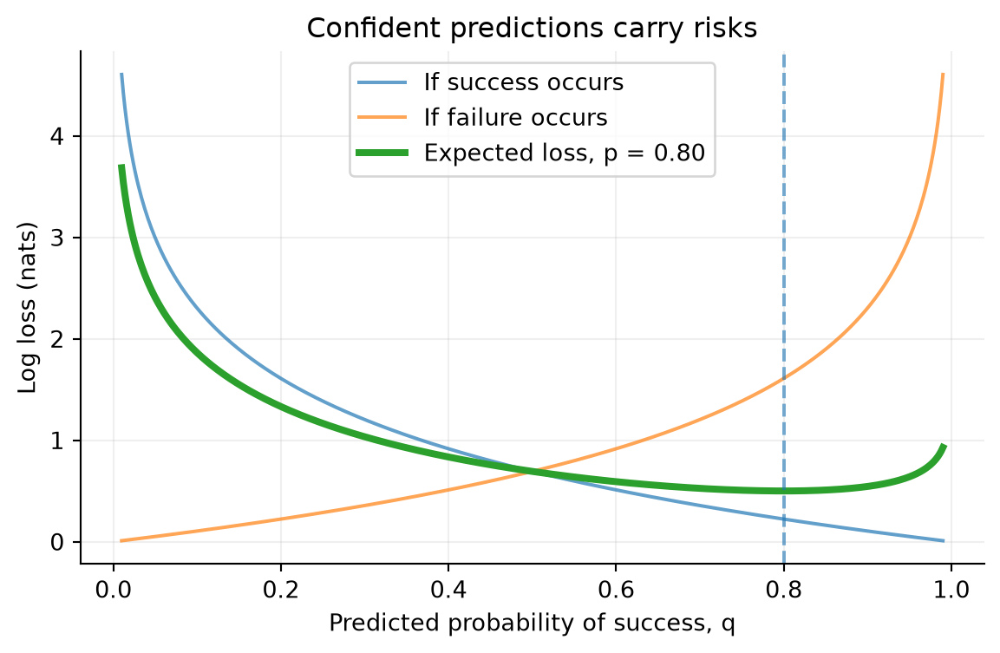
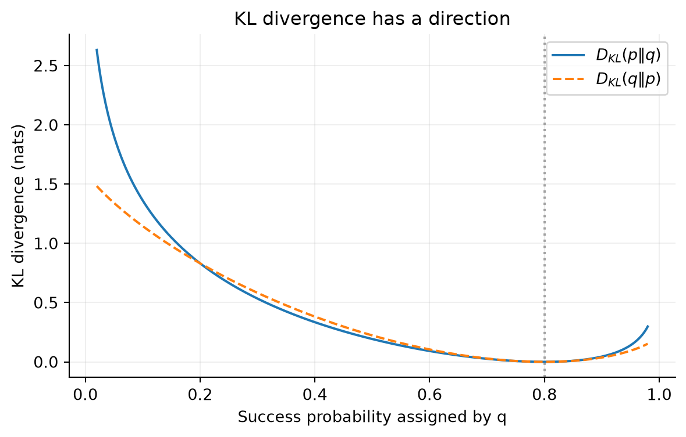
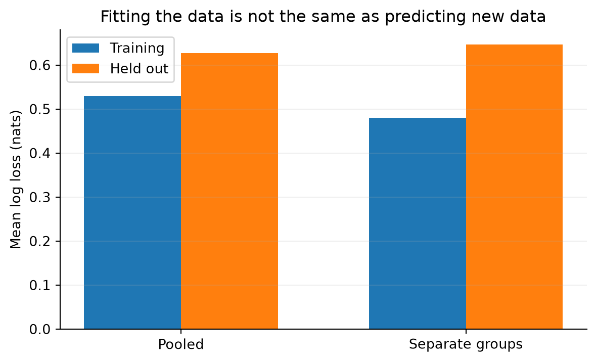

# Common imports for the executable examples in this chapter.
import numpy as np
import matplotlib.pyplot as plt
plt.rcParams.update({
"figure.figsize": (7, 4),
"axes.spines.top": False,
"axes.spines.right": False,
})Information Theory
1 Why study information theory?
Imagine that two engineers are trying to predict whether a machine will fail during a particular operating interval. Both produce probabilities, not just labels. The first assigns a probability of failure of 0.10; the second assigns a probability of 0.80. When the machine fails, the second researcher has made the less surprising prediction. But if the machine does not fail, the first researcher has made the less surprising prediction.
How should we judge these predictions over many observations? What distinguishes uncertainty before an observation from the quality of a prediction after an observation? And what can we say when we are ignorant about the probabilities associated with the process?
Information theory gives us a precise language for these questions. In this chapter, we use a small part of that theory to build toward the evaluation of statistical models. Our purpose is not to study data compression or communication channels. We instead want to understand why logarithmic probabilities appear in statistical inference and what quantities such as entropy and Kullback–Leibler (KL) divergence do, and do not, tell us.
In this brief overview, our goals are:
- Explain why low-probability observations are assigned greater surprisal.
- Interpret Shannon entropy as expected surprisal under a specified probability distribution.
- Distinguish entropy from cross-entropy and explain why lower model entropy need not imply better predictions.
- Interpret KL divergence as excess expected predictive log loss, rather than as an ordinary distance.
- Explain why predictive performance must be estimated when the generating distribution is unknown, and why using the same observations to fit and evaluate a model can mislead us.
- Identify what predictive evaluation cannot establish about causal mechanisms or scientific explanations.
1.1 Conventions
We will work mainly with discrete outcomes so that the important ideas are not hidden by calculus. Throughout the chapter:
- p(x) denotes the generating distribution: the probabilities under which observations arise in our thought experiments.
- q(x) denotes a predictive distribution supplied by a model.
- x denotes a possible outcome; X is a random variable.
- \log means the natural logarithm, so information quantities are measured in nats, unless we explicitly write \log_2 for bits.
In real applications, p is generally unknown. We give it a name here to make the theoretical comparisons precise.
2 Information and surprise
2.1 Why probability determines surprise
Suppose a fair coin is tossed once (with all the usual assumptions to goes into what a ‘fair’ coin is). We know that the probability of heads is 1/2. Now suppose a fair, six-sided die is rolled. The probability of a six is 1/6. We are more surprised by the specified die result than by the specified coin result, because it was less probable before the experiment.
This suggests defining the surprisal associated with an outcome x as a decreasing function of its assigned probability p(x). A useful choice should also satisfy another requirement: for independent events, the information associated with the joint occurrence should equal the sum of the information associated with each event.
If X and Y are independent, then
p(x,y)=p(x)p(y).
We therefore want a function I for which
I(x,y)=I(x)+I(y).
Recall that logarithms transform products into sums. This motivates the definition
I_p(x)=-\log p(x)
The subscript emphasizes that the surprisal depends on which probability distribution assigned the probability. There is no surprisal value for an outcome in isolation from a probability assignment.
For independent observations,
-\log[p(x)p(y)]=-\log p(x)-\log p(y)
This additive property is also one reason that log probabilities appear so frequently in likelihood-based statistical inference.
In casual speech, information can mean a meaningful fact, a useful discovery, or a message that changes a decision. In information theory, the quantity -\log p(x) does not directly measure any of those things. It quantifies how surprising an outcome is relative to an assigned distribution. A rare observation is not automatically important, scientifically revealing, or useful.
2.2 The units of information
For a fair coin outcome,
I(\text{heads})=-\log_2(1/2)=1\text{ bit}
For the same event using natural logarithms,
I(\text{heads})=-\log(1/2)=\log 2\approx 0.693\text{ nats}
Changing the logarithm base changes only the units. For example,
1\text{ nat}=\frac{1}{\log 2}\text{ bits}
In what follows, we use natural logarithms because statistical likelihoods and log scores are normally expressed that way.
The next figure illustrates the relationship between assigned probability and surprisal.
probabilities = np.linspace(0.005, 1.0, 500)
surprisal = -np.log(probabilities)
fig, ax = plt.subplots()
ax.plot(probabilities, surprisal, linewidth=2)
ax.set(xlabel="Assigned probability of an outcome",
ylabel="Surprisal (nats)",
title="How surprising is an outcome?")
ax.grid(alpha=0.2)
plt.show()
The two limiting cases should be understood before continuing on:
- If p(x)=1, then I_p(x)=0. An outcome that is certain under the distribution carries no surprise.
- If p(x)=0 and the outcome nevertheless occurs, the log loss is infinite. A probability assignment of zero rules the outcome out entirely.
The second case will become important when we evaluate models.
If a model assigns a probability of 0.01 to an event, and another model assigns 0.10 to the same event, which model experiences greater surprisal when the event occurs?
Would your answer change if the event did not occur? What probabilities you would need to evaluate the alternative outcome.
3 Expected surprise and entropy
3.1 From one outcome to a distribution
Surprisal describes a realized outcome. Before observing a random variable, however, we do not know which outcome will occur. We can instead ask for the expected surprisal under a specified distribution.
For a discrete random variable with probabilities p(x), take the ordinary expected value:
\begin{aligned} H(p) &=\mathbb{E}_{X\sim p}[I_p(X)]\\ &=\sum_x p(x)[-\log p(x)]\\ &=\boxed{-\sum_x p(x)\log p(x).} \end{aligned}
This is the Shannon entropy.
Note that this is just the expected value of the function -\log p(X).
We use the standard convention 0\log 0=0 in this sum. The convention is justified by the limit \lim_{u\to0^+}u\log u=0. A zero-probability outcome contributes nothing to an expectation taken under p.
-\log p(x) is the surprisal of one outcome. H(p) is the average surprisal over possible outcomes under p. An individual observation does not itself have an entropy.
3.2 The Bernoulli Distribution
Let X be Bernoulli with P(X=1)=\theta. It has only two possible outcomes:
p(1)=\theta,\qquad p(0)=1-\theta.
Its entropy is
H(\theta)=-\theta\log\theta-(1-\theta)\log(1-\theta)
When \theta=0 or \theta=1, the outcome is certain and entropy is zero. When \theta=1/2, the two outcomes are equally probable and entropy reaches its maximum, \log 2 nats, or 1 bit.
theta = np.linspace(0, 1, 501)
h = np.zeros_like(theta)
interior = (theta > 0) & (theta < 1)
h[interior] = -(
theta[interior] * np.log(theta[interior])
+ (1 - theta[interior]) * np.log1p(-theta[interior])
)
fig, ax = plt.subplots()
ax.plot(theta, h, linewidth=2)
ax.axvline(0.5, linestyle="--", alpha=0.6)
ax.scatter([0.5], [np.log(2)], zorder=3)
ax.set(xlabel=r"$\theta=P(X=1)$", ylabel="Entropy (nats)",
title="Uncertainty in a Bernoulli distribution")
ax.grid(alpha=0.2)
plt.show()
We must be careful to avoid saying that a high-entropy distribution is a “bad” distribution or that low entropy is always preferable. Entropy does not evaluate how well a probability distribution agrees with reality, it only quantifies uncertainty within that distribution.
For a fixed collection of k possible outcomes, entropy is maximized by the uniform distribution, for which p(x)=1/k and H(p)=\log k. The phrase fixed collection of outcomes is important here as changing what we count as an outcome can change the entropy. Seeing as how the uniform distribution maximizes entropy in the above case, our caution against saying a high-entropy distribution is “bad” is better understood. We know from earlier material that when we have no understanding about a process, the assignment of a uniform prior is the most reasonable action.
3.3 Entropy depends on the question
Consider the roll of a fair die. If X records the exact face, it has six equally likely outcomes and
H(X)=\log 6
Now define a new variable Y that records only whether the die result is even or odd. Then Y has two equally likely outcomes and
H(Y)=\log 2
Both variables describe the same physical roll. They answer different questions. Information quantities depend on how we define the random variable and its possible outcomes.
This is one reason to be cautious when comparing numerical entropy values across different measurements or descriptions of a system.
A researcher reports that their fitted model has low entropy. Does this alone tell us whether the model will predict new observations well?
Construct a situation where a low-entropy model makes poor predictions.
4 Predictive distributions and cross-entropy
4.1 Evaluating a probability forecast
Entropy asks how surprising observations are expected to be under the same distribution that generates them. In statistical inference, we usually face a different problem: a model assigns probabilities, and the observations may be better estimated by using another distribution.
Let p(x) be the generating distribution and q(x) the probabilities assigned by a predictive model.
When x occurs, the model receives the log loss
L(q,x)=-\log q(x).
Notice that the model’s probability q(x) appears inside the logarithm, not the unknown generating probability p(x).
A model incurs a small loss if it assigns high probability to an observation that occurs and a large loss if it assigns low probability to that observation.
For a collection of observations x_1,\ldots,x_n, the average log loss is
\widehat L(q)=-\frac{1}{n}\sum_{i=1}^n\log q(x_i).
The negative sum of log probabilities is the negative log likelihood when the model supplies the relevant joint distribution through a product \prod_i q(x_i), as it does for independent observations under a fixed predictive distribution.
If observations are dependent or when predictions change with earlier observations we will need to be more careful with the violation of the independence assumption.
4.2 Expected loss under the generating distribution
If the observations arise according to p, the expected log loss of predictions made using q is
\begin{aligned} H(p,q) &=\mathbb{E}_{X\sim p}[-\log q(X)]\\ &=-\sum_x p(x)\log q(x) \end{aligned}
This quantity is called cross-entropy.
Compare the definitions:
\underbrace{H(p)}_{\text{entropy}}=-\sum_x p(x)\log p(x), \qquad \underbrace{H(p,q)}_{\text{cross-entropy}}=-\sum_x p(x)\log q(x).
Both expectations use p to weight the outcomes, because p is the distribution that generates them. They differ in the probability used to score those outcomes.
This is a very important distinction: entropy is a property of a distribution; cross-entropy evaluates one distribution’s predictions against outcomes generated by another.
Suppose a process produces a success with probability p(1)=0.8 and a failure with probability p(0)=0.2.
Three models make these predictions:
| Model | q(1) | q(0) | Expected log loss H(p,q) |
|---|---|---|---|
| A | 0.80 | 0.20 | 0.500 nats |
| B | 0.50 | 0.50 | 0.693 nats |
| C | 0.99 | 0.01 | 0.929 nats |
For example, Model C incurs expected loss
\begin{aligned} H(p,q_C) &=-0.8\log(0.99)-0.2\log(0.01)\\ &\approx 0.929. \end{aligned}
Model C is highly confident that a success will occur. It is therefore rewarded when a success happens, but receives a very large penalty on the failures that occur 20% of the time. It has lower entropy than Model A, yet its expected predictive loss is higher.
The following code verifies the table.
p_success = 0.8
forecasts = {"A (calibrated)": 0.8,
"B (uninformative)": 0.5,
"C (overconfident)": 0.99}
for name, q_success in forecasts.items():
expected_loss = -(
p_success * np.log(q_success)
+ (1 - p_success) * np.log1p(-q_success)
)
print(f"{name:20s}: {expected_loss:.3f} nats")A (calibrated) : 0.500 nats
B (uninformative) : 0.693 nats
C (overconfident) : 0.929 natsFor any Bernoulli prediction q, a realized success has loss -\log q, a realized failure has loss -\log(1-q), and their expectation under p(1)=0.8 is
H(p,q)=-0.8\log q-0.2\log(1-q).
q_grid = np.linspace(0.01, 0.99, 500)
loss_success = -np.log(q_grid)
loss_failure = -np.log1p(-q_grid)
expected_loss = 0.8 * loss_success + 0.2 * loss_failure
fig, ax = plt.subplots()
ax.plot(q_grid, loss_success, label="If success occurs", alpha=0.7)
ax.plot(q_grid, loss_failure, label="If failure occurs", alpha=0.7)
ax.plot(q_grid, expected_loss, linewidth=3, label="Expected loss, p = 0.80")
ax.axvline(0.8, linestyle="--", alpha=0.6)
ax.set(xlabel="Predicted probability of success, q",
ylabel="Log loss (nats)",
title="Confident predictions carry risks")
ax.legend()
ax.grid(alpha=0.2)
plt.show()
This example illustrates a reason for using logarithmic scoring: in expectation, a model minimizes its log loss by reporting the generating probabilities. Such a scoring rule is called strictly proper. It rewards well-calibrated probability assignments, not merely confident ones.
Now, when p is unknown, we cannot directly evaluate these expected losses. We will return to address this problem soon.
5 Kullback–Leibler divergence
5.1 Excess expected predictive loss
We now have two quantities:
- H(p): the expected log loss if predictions use the generating distribution itself.
- H(p,q): the expected log loss if predictions use a different distribution q.
Subtracting them gives the additional expected loss incurred by predicting with q instead of p:
\begin{aligned} D_{\mathrm{KL}}(p\|q) &=H(p,q)-H(p)\\ &=-\sum_x p(x)\log q(x)+\sum_x p(x)\log p(x)\\ &=\boxed{\sum_x p(x)\log\frac{p(x)}{q(x)}.} \end{aligned}
This is the Kullback–Leibler divergence from q to p, conventionally written D_{\mathrm{KL}}(p\|q).
The order matters. In this expression, observations are weighted according to p, while q provides the predictive probabilities being evaluated.
KL divergence is the excess expected log loss associated with using q to predict observations generated according to p.
5.2 Properties that follow from the interpretation
Nonnegativity. For distributions with the same outcome space,
D_{\mathrm{KL}}(p\|q)\geq 0,
with equality if p=q on the support of p (for normalized discrete distributions, this means the distributions are equal). This is consistent with the fact that the true probabilities minimize expected log loss.
To see a short argument, use \log u\leq u-1 for u>0. If q(x)>0 wherever p(x)>0, then
\begin{aligned} D_{\mathrm{KL}}(p\|q) &=-\sum_{x:p(x)>0}p(x)\log\frac{q(x)}{p(x)}\\ &\geq \sum_{x:p(x)>0}\bigl[p(x)-q(x)\bigr]\\ &\geq 0. \end{aligned}
The last inequality holds because the q-probabilities over the support of p sum to at most one.
Asymmetry. In general,
D_{\mathrm{KL}}(p\|q)\ne D_{\mathrm{KL}}(q\|p).
Reversing the arguments changes which distribution generates the observations and which one is being evaluated. Those are different prediction problems.
Not a metric. Because it is asymmetric (and does not generally satisfy the triangle inequality), KL divergence is not an ordinary geometric distance.
Zero-probability predictions. If p(x)>0 but q(x)=0 for some outcome, then D_{\mathrm{KL}}(p\|q)=\infty. The predictive model regards an actually possible outcome as impossible.
For the Bernoulli example, the KL divergence from Model B’s predictions to the actual process is
\begin{aligned} D_{\mathrm{KL}}(p\|q_B) &=0.8\log\frac{0.8}{0.5} +0.2\log\frac{0.2}{0.5}\\ &\approx 0.193\text{ nats}. \end{aligned}
As a check, 0.693-0.500\approx 0.193.
5.3 Direction matters: a visualization
p = 0.8
q = np.linspace(0.02, 0.98, 500)
kl_pq = p * np.log(p / q) + (1 - p) * np.log((1 - p) / (1 - q))
kl_qp = q * np.log(q / p) + (1 - q) * np.log((1 - q) / (1 - p))
fig, ax = plt.subplots()
ax.plot(q, kl_pq, label=r"$D_{KL}(p\Vert q)$")
ax.plot(q, kl_qp, label=r"$D_{KL}(q\Vert p)$", linestyle="--")
ax.axvline(p, color="gray", linestyle=":", alpha=0.7)
ax.set(xlabel="Success probability assigned by q",
ylabel="KL divergence (nats)",
title="KL divergence has a direction")
ax.legend()
ax.grid(alpha=0.2)
plt.show()
5.4 What KL divergence cannot tell us
Knowing that D_{\mathrm{KL}}(p\|q_1)<D_{\mathrm{KL}}(p\|q_2) tells us that q_1 has lower expected log loss than q_2 for observations generated from p. It does not establish that q_1 represents the correct causal mechanism or contains a better scientific explanation.
Two very different causal stories may generate nearly identical predictive distributions for the observations being evaluated. Their predictive scores can therefore be nearly identical.
NoteDo not confuse these differences
KL divergence is not H(q)-H(p). It is H(p,q)-H(p). The first difference compares the uncertainties inside two distributions; the second compares predictive loss against the same generating distribution.
6 From theoretical divergence to statistical model evaluation
6.1 The central difficulty: we do not know p
Our worked examples gave us the generating distribution p, so we could calculate entropy, cross-entropy, and KL divergence exactly. In statistical practice, this distribution is usually the object of investigation.
What we observe is a dataset
\mathcal D=\{x_1,\ldots,x_n\}.
We fit models to these observations and ask how well their predictions might work on new observations drawn from the relevant population or process.
For a fixed predictive distribution q, we can estimate its expected log loss using held-out observations x_1^*,\ldots,x_m^*:
\widehat L_{\mathrm{test}}(q) =-\frac{1}{m}\sum_{j=1}^{m}\log q(x_j^*).
This estimates cross-entropy under the conditions represented by the test set. It does not require us to know p. We also cannot usually recover the absolute KL divergence because H(p) remains unknown. But differences in expected log loss between predictive distributions can still be estimated using the same evaluation observations, since the common H(p) term cancels.
6.2 Why evaluating on training data can mislead
A flexible model can adapt to the accidental patterns in its training observations. That can lower its training loss without improving its predictions of new outcomes.
Here is a simple experiment. We have 12 groups of machines. Unknown to the model, each group has the same true probability of failure, 0.70. We collect only six training observations from each group.
We compare two models:
- A pooled model estimates one common failure probability for all groups.
- A separate-groups model estimates a different failure probability for each group.
Both models use the smoothed estimate (k+1)/(n+2), where k is the number of failures in n observations. The smoothing avoids assigning probabilities of exactly zero or one in very small samples. It can also be interpreted as the posterior predictive failure probability under a uniform Beta prior and a Bernoulli likelihood.
The following code generates both training observations and a much larger, independent evaluation set. The random seed makes the example reproducible.
rng = np.random.default_rng(2026)
true_probability = 0.70
n_groups = 12
train_per_group = 6
test_per_group = 300
train = rng.binomial(1, true_probability, (n_groups, train_per_group))
test = rng.binomial(1, true_probability, (n_groups, test_per_group))
# A shared estimate, using all training observations.
q_pooled = (train.sum() + 1) / (train.size + 2)
# An estimate for each group, using only that group's training observations.
q_by_group = (train.sum(axis=1) + 1) / (train_per_group + 2)
# Expand predictions to match each observation in its group.
q_pooled_train = np.full(train.shape, q_pooled)
q_pooled_test = np.full(test.shape, q_pooled)
q_group_train = np.broadcast_to(q_by_group[:, None], train.shape)
q_group_test = np.broadcast_to(q_by_group[:, None], test.shape)
def mean_log_loss(observations, predictions):
"""Mean Bernoulli negative log predictive probability."""
return float(np.mean(-(
observations * np.log(predictions)
+ (1 - observations) * np.log1p(-predictions)
)))
scores = {
"Pooled": [mean_log_loss(train, q_pooled_train),
mean_log_loss(test, q_pooled_test)],
"Separate groups": [mean_log_loss(train, q_group_train),
mean_log_loss(test, q_group_test)],
}
for name, (training, testing) in scores.items():
print(f"{name:16s} | training: {training:.3f} | held out: {testing:.3f}")Pooled | training: 0.530 | held out: 0.627
Separate groups | training: 0.480 | held out: 0.647labels = list(scores)
x = np.arange(len(labels))
width = 0.34
fig, ax = plt.subplots()
ax.bar(x - width / 2, [scores[name][0] for name in labels], width,
label="Training")
ax.bar(x + width / 2, [scores[name][1] for name in labels], width,
label="Held out")
ax.set_xticks(x, labels)
ax.set(ylabel="Mean log loss (nats)",
title="Fitting the data is not the same as predicting new data")
ax.legend()
ax.grid(axis="y", alpha=0.2)
plt.show()
The separate-groups model has more opportunities to adapt to differences between groups in the training sample. Yet we generated the groups from the same probability. Differences among their observed training rates are sampling variation, not evidence of genuine group differences built into this experiment.
The point is not that pooling is always the correct modeling decision. Real groups can differ. Rather, a decrease in training loss is not sufficient evidence of improved predictive performance. Held-out evaluation asks a different question.
TipTry changing the experiment
Change train_per_group, n_groups, and true_probability, or rerun with different random seeds. Under what conditions does the separate-groups model tend to perform worse on held-out observations? What changes if you give each group a different true probability?
6.3 Bayesian prediction: average probabilities before taking logs
For a Bayesian model with parameters \theta and training data \mathcal D, prediction accounts for posterior uncertainty in \theta:
q(x_{\mathrm{new}}\mid\mathcal D) =\int p(x_{\mathrm{new}}\mid\theta)\, p(\theta\mid\mathcal D)\,d\theta.
The log loss of the Bayesian predictive distribution is then
-\log q(x_{\mathrm{new}}\mid\mathcal D) =-\log\int p(x_{\mathrm{new}}\mid\theta) p(\theta\mid\mathcal D)\,d\theta.
This is generally not the same as taking the posterior average of the parameter-wise negative log likelihoods:
-\log\mathbb E_{\theta\mid\mathcal D} [p(x_{\mathrm{new}}\mid\theta)] \ne \mathbb E_{\theta\mid\mathcal D} [-\log p(x_{\mathrm{new}}\mid\theta)].
This distinction is worth remembering when we later calculate log predictive densities from posterior samples: we average the predictive probabilities (or densities) before applying the logarithm.
6.4 Where information criteria fit
Once we have predictive log scores, the question becomes how to estimate performance on new data without continually reserving large independent test sets. Cross-validation and information criteria address versions of this problem.
At this stage, we need only the conceptual picture:
- Held-out validation evaluates models on observations not used to fit them.
- Leave-one-out cross-validation (LOO-CV) repeatedly evaluates the predictive density of an observation using a model trained without that observation. Methods such as PSIS-LOO approximate this efficiently for many Bayesian models.
- WAIC uses the pointwise log predictive densities and a correction for effective model complexity to estimate out-of-sample predictive performance.
In Statistical Rethinking, these ideas eventually appear with quantities such as the expected log pointwise predictive density (ELPD) and deviance-style scores. Their sign conventions differ: higher ELPD is better, while lower negative-log-loss or deviance-style criteria are better when evaluated comparably.
For example, the deviance-style conversion often takes the form
\text{deviance-scale score}=-2\,\text{log predictive score}.
Multiplying by -2 changes the scale and reverses which direction is preferable; it does not change which model has the stronger predictive score, provided the comparison is otherwise valid.
Information criteria are not a shortcut to discovering the true distribution, and their uncertainty and assumptions matter. Model comparisons should use the same observations, the same predictive target, and compatible likelihood definitions and evaluation units.
7 What information theory does—and does not—tell us
The mathematics is precise, but familiar terminology can encourage interpretations that go further than the mathematics permits.
| Tempting interpretation | More precise statement |
|---|---|
| “A surprising event must be informative in a useful sense.” | Surprisal is relative to an assigned probability, not to the scientific importance of the event. |
| “Entropy is what we learned from the observation.” | Entropy is expected surprisal under a distribution. Learning can be examined by comparing probability assignments before and after data. |
| “A low-entropy model is accurate.” | A low-entropy model may be confidently wrong. |
| “KL divergence is the distance between distributions.” | KL divergence is directional excess expected log loss, not a metric. |
| “KL divergence is H(q)-H(p).” | KL divergence is H(p,q)-H(p). |
| “The smallest information criterion identifies the true model.” | The criterion estimates a particular aspect of predictive performance, subject to assumptions and uncertainty. |
| “Good predictions prove the causal explanation.” | Different causal explanations can imply similar predictions for the observations under consideration. |
7.1 A warning about continuous variables
We have deliberately used discrete distributions, where p(x) is the probability of an outcome. With a continuous variable, we generally work with a density f(x), not a probability assigned to the exact point x.
An exact point in a continuous distribution has probability zero, even when its density is positive. A density can also exceed one. Accordingly, the quantity
h(f)=-\int f(x)\log f(x)\,dx
is called differential entropy, and it does not inherit every intuitive interpretation of discrete Shannon entropy. It can be negative and changes when we rescale a measured variable. That does not prevent predictive log densities and KL divergence between suitable continuous distributions from being useful. It simply means we must not treat a density as a probability mass or interpret differential entropy as a direct count of bits needed to name an exact real number.
For our immediate goal—understanding model prediction and evaluation—the discrete setting contains the essential logic.
7.2 A warning about “information gained”
Suppose observing data changes our prior beliefs about a parameter \theta into a posterior distribution. One possible measure of the change is
D_{\mathrm{KL}}\bigl(p(\theta\mid\mathcal D)\|p(\theta)\bigr).
This describes how different the posterior is from the prior in the KL sense. It is related to Bayesian information gain, but it is not the same quantity as the surprisal of the data, -\log p(\mathcal D). An observation can be surprising while changing our beliefs about a particular parameter very little.
We will return to this distinction when considering prior distributions, posterior inference, and maximum-entropy arguments.
7.3 The central thread
We began with a single outcome and ended with comparing predictions from statistical models:
\underbrace{-\log p(x)}_{\text{surprisal}} \quad\longrightarrow\quad \underbrace{H(p)}_{\text{expected surprisal}} \quad\longrightarrow\quad \underbrace{H(p,q)}_{\text{expected predictive loss}} \quad\longrightarrow\quad \underbrace{D_{\mathrm{KL}}(p\|q)}_{\text{excess expected loss}}.
In applied statistics, we do not normally know p, so we cannot evaluate these theoretical expectations directly. Instead, we use observed data and predictive checks to estimate how models may perform on new observations. This is the conceptual foundation for information criteria and cross-validation.
8 Practice
These exercises emphasize interpretation and the choice of method. Numerical answers should be accompanied by a short explanation of what the computed quantity means. ::: practice-box 1. A surprise is relative to a model. Two analysts consider the same event. Analyst A assigns probability 0.20; Analyst B assigns probability 0.02. Calculate each analyst’s surprisal if the event occurs, in nats. Why is it incorrect to say that the event has a unique surprisal independent of the analysts? :::
NoteSuggested solution
The surprisals are
I_A=-\log(0.20)\approx 1.609\text{ nats},\qquad I_B=-\log(0.02)\approx 3.912\text{ nats}.
Analyst B is more surprised because B assigned the event a lower probability. Surprisal is a function of an outcome and a probability assignment; the event alone does not determine it. Neither calculation tells us which analyst is better calibrated without additional observations or information about the process.
2. Expected surprise. Let X take the values a,b,c with probabilities (0.5,0.3,0.2). Calculate H(X) in nats. Identify which outcome has the greatest surprisal and explain why that does not imply it makes the largest contribution to entropy.
NoteSuggested solution
Using natural logarithms,
\begin{aligned} H(X)&=-0.5\log(0.5)-0.3\log(0.3)-0.2\log(0.2)\\ &\approx 1.030\text{ nats}. \end{aligned}
Outcome c has the largest individual surprisal, because it is the least probable:
I(a)\approx0.693,\qquad I(b)\approx1.204,\qquad I(c)\approx1.609.
But entropy averages surprisal over outcomes. The three contributions -p(x)\log p(x) are approximately 0.347, 0.361, and 0.322 nats. Outcome b contributes the most because it is sufficiently surprising and occurs more frequently than c. The most surprising outcome need not make the largest contribution to expected surprise.
3. Coarsening an outcome. A fair eight-sided die is rolled. First define X as the exact result; then define Y as whether the result is odd or even. Compute H(X) and H(Y) in bits. Explain why different entropies can describe the same underlying physical experiment.
NoteSuggested solution
For the exact result X, each of the eight faces has probability 1/8, so
H(X)=-8\left(\frac18\log_2\frac18\right)=3\text{ bits}.
For parity Y, odd and even each have probability 1/2, so
H(Y)=-2\left(\frac12\log_2\frac12\right)=1\text{ bit}.
The physical experiment is unchanged, but X and Y represent different descriptions of its outcome. Knowing the exact face answers a more detailed question than knowing parity. In this case parity is a deterministic coarsening of the exact result and necessarily discards information about which face occurred.
4. A confident but poor forecast. A binary process has generating success probability 0.70. Compare predictions q(1)=0.70, q(1)=0.50, and q(1)=0.99. Compute their expected log losses and rank them. Which predictive model has the smallest entropy? Does this answer the same question as ranking by expected log loss?
NoteSuggested solution
For a generating success probability p(1)=0.70 and prediction q(1)=r, expected log loss is
H(p,q)=-0.70\log r-0.30\log(1-r).
| Predicted r | Expected log loss (nats) | Entropy of the model (nats) |
|---|---|---|
| 0.70 | 0.611 | 0.611 |
| 0.50 | 0.693 | 0.693 |
| 0.99 | 1.389 | 0.056 |
Thus the expected-loss ranking, from best to worst, is 0.70, 0.50, 0.99. The 0.99 model has the smallest entropy, since it is most certain of its prediction, but it has the worst expected loss. Its occasional failures are extremely costly under log loss. Entropy measures uncertainty within q; cross-entropy measures q’s expected predictive performance under p.
5. Derive the KL identity. Starting from the definitions of entropy and cross-entropy, show that D_{\mathrm{KL}}(p\|q)=H(p,q)-H(p). Explain what remains fixed when we compare two candidate predictions q_1 and q_2 against the same p.
NoteSuggested solution
By definition,
H(p)=-\sum_xp(x)\log p(x),\qquad H(p,q)=-\sum_xp(x)\log q(x).
Subtracting,
\begin{aligned} H(p,q)-H(p) &=-\sum_xp(x)\log q(x)+\sum_xp(x)\log p(x)\\ &=\sum_xp(x)\log\frac{p(x)}{q(x)}\\ &=D_{\mathrm{KL}}(p\|q). \end{aligned}
When comparing q_1 with q_2, the generating distribution p and the evaluation target remain fixed. In particular, H(p) is a constant common to both comparisons. Therefore,
D_{\mathrm{KL}}(p\|q_1)-D_{\mathrm{KL}}(p\|q_2) =H(p,q_1)-H(p,q_2).
This is why differences in expected predictive log loss can rank the models even though H(p) is generally unknown. The calculation assumes common outcomes and finite values where needed; if q(x)=0 for an outcome having p(x)>0, the corresponding divergence is infinite.
6. Direction matters. Using Bernoulli distributions with p(1)=0.8 and q(1)=0.5, calculate both D_{\mathrm{KL}}(p\|q) and D_{\mathrm{KL}}(q\|p). Explain their differing interpretations without calling either quantity a geometric distance.
NoteSuggested solution
For p(1)=0.8, q(1)=0.5, and complementary probabilities p(0)=0.2, q(0)=0.5,
\begin{aligned} D_{\mathrm{KL}}(p\|q) &=0.8\log\frac{0.8}{0.5}+0.2\log\frac{0.2}{0.5}\\ &\approx0.193\text{ nats},\\[5pt] D_{\mathrm{KL}}(q\|p) &=0.5\log\frac{0.5}{0.8}+0.5\log\frac{0.5}{0.2}\\ &\approx0.223\text{ nats}. \end{aligned}
The first is the extra expected loss from using q to predict observations generated by p. The second reverses those roles: q generates observations and p provides predictions. The expectations weight the two outcomes differently, so there is no reason for the values to match. Neither is an ordinary geometric distance.
7. Model comparison without knowing p. You receive 100 new outcomes and predictive probabilities from two models that were fit without using those outcomes. Write Python code to compute their mean held-out log losses. Explain why the difference in observed mean log loss can be useful even though you do not know the entropy of the generating distribution.
NoteSuggested solution
With binary outcomes y_i\in\{0,1\} and predictions q_i=P(Y_i=1), compute
\widehat L=-\frac{1}{100}\sum_{i=1}^{100} \left[y_i\log q_i+(1-y_i)\log(1-q_i)\right].
Here is executable example code. In a real analysis, replace the simulated outcomes and the two example forecast arrays with the 100 held-out observations and their corresponding model predictions.
rng_solution_7 = np.random.default_rng(107)
outcomes = rng_solution_7.binomial(1, 0.7, size=100)
model_1_probs = np.full(100, 0.65)
model_2_probs = np.full(100, 0.85)
def heldout_log_loss(y, prob_success):
y = np.asarray(y)
prob_success = np.asarray(prob_success)
assert y.shape == prob_success.shape
assert np.all((prob_success > 0) & (prob_success < 1))
return float(-np.mean(
y * np.log(prob_success)
+ (1 - y) * np.log1p(-prob_success)
))
loss_1 = heldout_log_loss(outcomes, model_1_probs)
loss_2 = heldout_log_loss(outcomes, model_2_probs)
print(f"Model 1: {loss_1:.3f} nats/observation")
print(f"Model 2: {loss_2:.3f} nats/observation")
print(f"Model 2 minus Model 1: {loss_2 - loss_1:+.3f}")Model 1: 0.598 nats/observation
Model 2: 0.631 nats/observation
Model 2 minus Model 1: +0.033A positive value of loss_2 - loss_1 favors Model 1 on these observations; a negative value favors Model 2. For a fixed generating distribution, the theoretical difference is
H(p,q_2)-H(p,q_1) =D_{\mathrm{KL}}(p\|q_2)-D_{\mathrm{KL}}(p\|q_1),
because H(p) cancels. The observed difference estimates this comparison without knowing H(p). With only 100 observations, however, sampling variation remains; a small difference is not conclusive. Probabilities must correspond to the same held-out observations, and models must not have been fit on these observations.
8. Simulated overfitting. Extend the grouped Bernoulli experiment in Section 5. Run at least 100 independent repetitions and report the mean training and held-out log loss for the pooled and separate-groups models. Repeat with 6, 30, and 100 training observations per group. Describe what changes and why. (Avoid selecting only runs that support your preferred conclusion.)
NoteSuggested solution
We repeat the same experiment using 12 groups, a common generating probability of 0.70, and 300 independent test observations per group. Both models use the same (k+1)/(n+2) smoothing rule as in Section 5. This code executes 200 independent repetitions for each training sample size and averages all results, not just selected runs.
rng_solution_8 = np.random.default_rng(108)
def simulation_scores(train_per_group, n_repetitions=200,
n_groups=12, test_per_group=300,
true_probability=0.70):
values = np.empty((n_repetitions, 4))
for rep in range(n_repetitions):
train = rng_solution_8.binomial(
1, true_probability, size=(n_groups, train_per_group)
)
test = rng_solution_8.binomial(
1, true_probability, size=(n_groups, test_per_group)
)
pooled = (train.sum() + 1) / (train.size + 2)
by_group = (train.sum(axis=1) + 1) / (train_per_group + 2)
q_pooled_train = np.full(train.shape, pooled)
q_pooled_test = np.full(test.shape, pooled)
q_group_train = np.broadcast_to(by_group[:, None], train.shape)
q_group_test = np.broadcast_to(by_group[:, None], test.shape)
values[rep] = [
mean_log_loss(train, q_pooled_train),
mean_log_loss(test, q_pooled_test),
mean_log_loss(train, q_group_train),
mean_log_loss(test, q_group_test),
]
return values.mean(axis=0)
print("n/group | pooled train | pooled test | group train | group test")
for n in (6, 30, 100):
scores_mean = simulation_scores(n)
print(f"{n:7d} | " + " | ".join(f"{s:12.4f}" for s in scores_mean))n/group | pooled train | pooled test | group train | group test
6 | 0.6028 | 0.6162 | 0.5353 | 0.6623
30 | 0.6109 | 0.6127 | 0.5953 | 0.6268
100 | 0.6098 | 0.6112 | 0.6053 | 0.6158The separate-groups model generally achieves lower training loss, especially with six observations per group, because it can adapt to each group’s sampling noise. Yet in this experiment the true probability is identical across groups, so that added flexibility offers no real predictive advantage. Its held-out loss is generally higher for small training samples.
As the number of observations per group increases, the separate estimates become more stable and approach the common generating probability. The discrepancy in held-out performance narrows; any residual difference will vary across Monte Carlo repetitions. The pooled model uses more observations to estimate the same underlying probability and is generally more efficient under this particular generating assumption. This conclusion would not automatically carry over to genuinely heterogeneous groups or models with different pooling assumptions.
If preferred, use the two columns of held-out scores from each repetition to calculate standard errors or plot the distribution of paired differences; reporting only the mean does not show their variability.
9. Two scientific explanations. Construct two different plausible causal stories that produce the same probability distribution for the observations being evaluated. Explain why predictive log scores alone cannot choose between the stories.
NoteSuggested solution
Let X and Y be binary. Consider the following two causal stories:
- Story A: X is generated as a fair Bernoulli variable. It then causes Y, which agrees with X with probability 0.8.
- Story B: Y is generated as a fair Bernoulli variable. It then causes X, which agrees with Y with probability 0.8.
Both stories imply exactly the same observational joint distribution:
| Y=0 | Y=1 | |
|---|---|---|
| X=0 | 0.40 | 0.10 |
| X=1 | 0.10 | 0.40 |
Thus every observed pair (X,Y) receives the same predictive probability and the same log score under either story. The causal interpretations differ, however. Under Story A, intervening to set X=1 would give P(Y=1\mid\operatorname{do}(X=1))=0.8; under Story B, intervening on X does not change the marginal distribution of its presumed cause Y, so P(Y=1\mid\operatorname{do}(X=1))=0.5.
The observational predictions alone cannot identify which direction of causation is correct. An intervention or some other defensible causal assumption would be needed to distinguish the stories.
10. Reflection. Consider the claim: “This model has a lower KL divergence, so it has learned more information about the world.” Identify which parts of the claim are justified, which are ambiguous, and what additional context would be required.
NoteSuggested solution
Justified, under specified conditions: If the intended comparison is D_{\mathrm{KL}}(p\|q_1)<D_{\mathrm{KL}}(p\|q_2), both models predict the same outcome under the same generating distribution p, and the divergences are well defined, then q_1 has lower expected predictive log loss than q_2.
Ambiguous: “More information” does not specify a particular quantity. KL divergence in this comparison measures the predictive discrepancy between distributions, not how much data the model observed, how much its posterior changed, or the practical importance of its predictions. Nor does a lower divergence prove that the model recovered the true mechanism.
Needed context: We must specify the direction of KL divergence, the common reference/generating distribution, the outcomes and measurement scale being scored, how the models produced their predictions, and whether the claimed difference is exact or estimated from data. If estimated, we should consider sampling uncertainty and the validity of the evaluation procedure. A different question—such as how much a posterior differs from a prior—would use a different KL comparison and require a different interpretation.
A more defensible conclusion is: “For the stated predictive target and generating distribution, this model has smaller expected excess log loss.”
9 Quick reference
| Quantity | Definition (discrete case) | Interpretation |
|---|---|---|
| Surprisal | I_p(x)=-\log p(x) | How surprising one outcome is according to p |
| Entropy | H(p)=-\sum_xp(x)\log p(x) | Expected surprisal under p |
| Log loss | L(q,x)=-\log q(x) | Penalty for one prediction from q |
| Cross-entropy | H(p,q)=-\sum_xp(x)\log q(x) | Expected log loss of q when p generates outcomes |
| KL divergence | D_{\mathrm{KL}}(p\|q)=H(p,q)-H(p) | Excess expected log loss of q relative to p |
10 Further reading
- Shannon, C. E. (1948). A Mathematical Theory of Communication. A foundational account of information theory, including entropy and its relationship to communication.
- McElreath, R. (2020). Statistical Rethinking, 2nd ed. In particular, Chapter 7 connects entropy, divergence, and the evaluation of statistical models.
- Stan / loo documentation. A practical reference for Bayesian leave-one-out cross-validation and WAIC when we reach those methods later in the course.